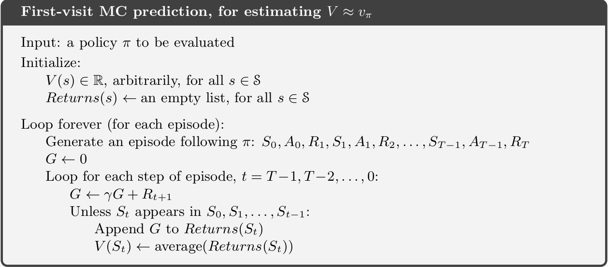
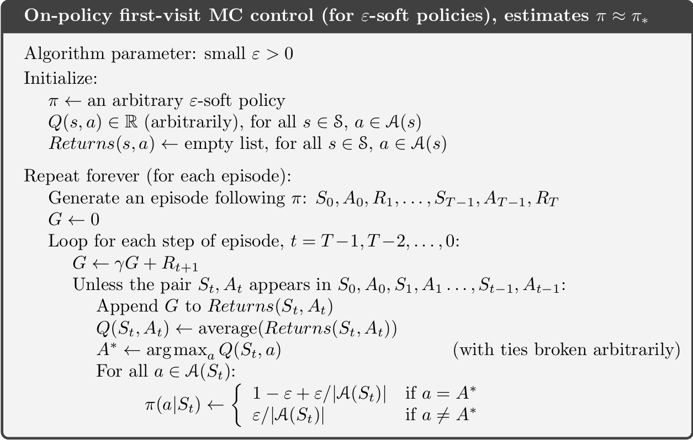
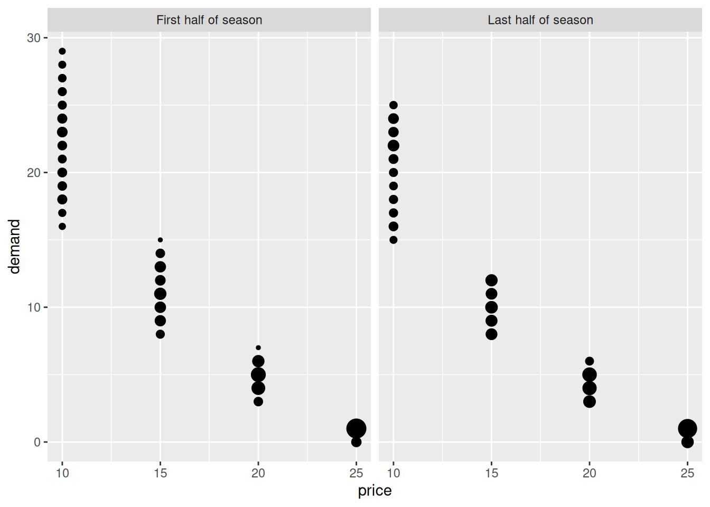
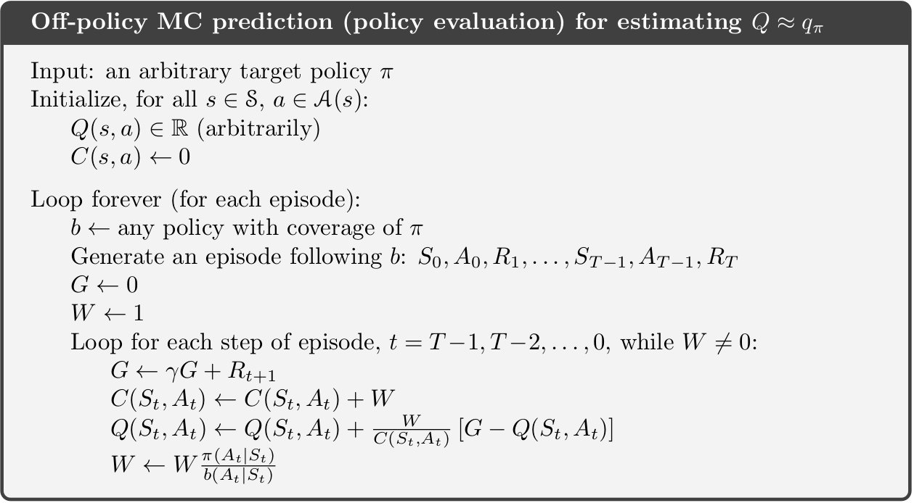
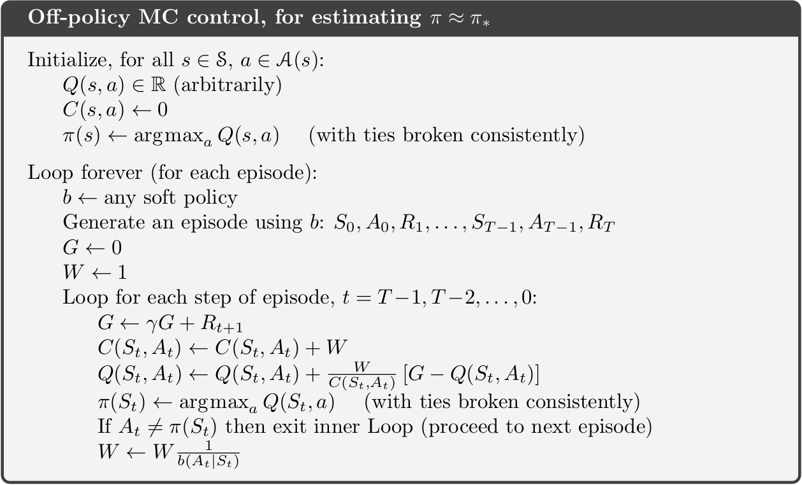

Slides for this module can be seen
here.
You do not have to look at them before the lecture!
9 Monte Carlo methods for prediction and control
The term “Monte Carlo” (MC) is often used for an estimation method which involves a random component. MC methods of RL learn state and action values by sampling and averaging returns. MC do not use dynamics where we estimate the value in the current state using the value in the next state (like in dynamic programming). Instead the MC methods estimate the values by considering different sample-paths (state, action and reward realizations). Compared to a Markov decision process, MC methods are model-free since they not require full knowledge of the transition probabilities and rewards (a model of the environment) instead MC methods learn the value function directly from experience. Often though, the sample-path is generated using simulation, i.e. some knowledge about the environment is given, but it is only used to generate sample transitions. For instance, consider an MDP model for the game Blackjack. Here calculating all the transition probabilities may be tedious and error-prone in terms of coding and numerical precision. Instead we can simulate a game (a sample-path) and use the simulations to evaluate/predict the value function of a policy and then use control to find a good policy. That is, we still use a generalised policy iteration framework, but instead of computing the value function using the MDP model a priori, we learn it from experience.
MC methods can be used for processes with episodes, i.e. where there is a terminal state. This reduces the length of the sample-path and the value of the states visited on the path can be updated based on the reward received.
9.1 Learning outcomes
By the end of this module, you are expected to:
- Identify the difference between model-based and model-free RL.
- Identify problems that can be solved using Monte-Carlo methods.
- Describe how MC methods can be used to estimate value functions from sample data.
- Do MC prediction to estimate the value function for a given policy.
- Explain why it is important to maintain exploration in MC algorithms.
- Do policy improvement (control) using MC in a generalized policy improvement algorithm.
- Compare different ways of exploring the state-action space.
- Argue why off-policy learning can help deal with the exploration problem.
- Use importance sampling to estimate the expected value of a target distribution using samples from a different distribution.
- Use importance sampling in off-policy learning to predict the value-function of a target policy.
- Explain how to modify the MC prediction and improvement algorithm for off-policy learning.
The learning outcomes relate to the overall learning goals number 3, 4, 9 and 12 of the course.
9.2 Textbook readings
For this module, you will need to read Chapter 5-5.7 in Sutton and Barto (2018). Read it before continuing this module. A summary of the book notation can be seen here.
9.3 MC prediction (evaluation)
Given a policy \(\pi\), we want to estimate the state-value function. Recall that the state value function is \[ v_\pi(s) = \mathbb{E}_\pi[G_t | S_t = s]. \] where the return is \[ G_t = R_{t+1} + \gamma R_{t+2} + \gamma^2 R_{t+3} + \cdots = \sum_{k=0}^{\infty} \gamma^k R_{t+k+1} = R_{t+1} + \gamma G_{t+1} \] Now given policy \(\pi\) and a sample-path (episode) \(S_0, A_0, R_1, S_1, A_1, \ldots, S_{T-1}, A_{T-1}, R_T\) ending in the terminal state at time \(T\), we can calculate the realized return for each state in the sample-path. Each time we have a new sample-path a new realized return for the states is given and the average for the returns in a state is an estimate of the state-value. With enough observations, the sample average converges to the true state-value under the policy \(\pi\).
Given a policy \(\pi\) and a set of sample-paths, there are two ways to estimate the state values \(v_\pi(s)\):
- First visit MC: average returns from first visit to state \(s\).
- Every visit MC: average returns following every visit to state \(s\).
First visit MC generates iid estimates of \(v_\pi(s)\) with finite variance, so the sequence of estimates converges to the expected value by the law of large numbers as the number of observations grow. Every visit MC does not generate independent estimates, but still converges.
An algorithm for first visit MC is given in Figure 9.1. The state-value estimate is stored in a vector \(V\) and the returns for each state in a list. Given a sample-path we add the return to the states on the path by scanning the path backwards and updating \(G\). Note since the algorithm considers first visit MC, a check of occurrence of the state earlier in the path done. If this check is dropped, we have a every visit MC algorithm instead. Moreover, the computation needed to update the state-value does not depend on the size of the process/MDP but only of the length of the sample-path.

The algorithm maintains a list of all returns for each state which may require a lot of memory. Instead as incremental update of \(V\) can be done. Adapting Equation 5.1, we have that the sample average can be updated using:
\[ V(s) \leftarrow V(s) + \frac{1}{n} \left[G - V(s)\right]. \] where \(n\) denote the number of realized returns found for state \(s\) and \(G\) the current realized return. The state-value vector must be initialized to zero and a vector counting the number of returns found for each state must be stored.
9.3.1 MC prediction of action-values
With a model of the environment we only need to estimate the state-value function, since it is easy to determine the policy from the state-values using the Bellman optimality equations Equation 7.3. However, if we do not know the expected reward and transition probabilities state values are not enough. In that case, it is useful to estimate action-values since the optimal policy can be found using \(q_*\) (see Equation 7.3). To find \(q_*\), we first need to predict action-values for a policy \(\pi\). This is essentially the same as for state-values, only we now talk about state-action pairs being visited, i.e. taking action \(a\) in state \(s\) instead.
If \(\pi\) is deterministic, then we will only estimate the values of actions that \(\pi\) dictates. Therefore some exploration are needed in order to have estimates for all action-values. Two possibilities are:
- Make \(\pi\) stochastic, e.g. \(\varepsilon\)-soft that that have non-zero probability of selecting each state-action pair.
- Use exploring starts, which specifies that every state-action pair has a non-zero probability of being selected as the starting state of a sample-path.
9.4 MC control (improvement)
We are now ready to formulate a generalized policy iteration (GPI) algorithm using MC to predict the action-values \(q(s,a)\). Policy improvement is done by selecting the next policy greedy with respect to the action-value function: \[ \pi(s) = \arg\max_a q(s, a). \] That is, we generate a sequence of policies and action-value functions \[\pi_0 \xrightarrow[]{E} q_{\pi_0} \xrightarrow[]{I} \pi_1 \xrightarrow[]{E} q_{\pi_1} \xrightarrow[]{I} \pi_2 \xrightarrow[]{E} q_{\pi_2} \xrightarrow[]{I} \ldots \xrightarrow[]{I} \pi_* \xrightarrow[]{E} q_{*}.\] Hence the policy improvement theorem applies for all \(s \in \mathcal{S}\):
\[\begin{align} q_{\pi_k}(s, a=\pi_{k+1}(s)) &= q_{\pi_k}(s, \arg\max_a q_{\pi_k}(s, a)) \\ &= \max_a q_{\pi_k}(s, a) \\ &\geq q_{\pi_k}(s, \pi_k(s))\\ &= v_{\pi_k}(s) \end{align}\]
That is, \(\pi_{k+1}\) is better than \(\pi_k\) or optimal.
It is important to understand the major difference between model-based GPI (remember that a model means the transition probability matrix and reward distribution are known) and model-free GPI. We cannot simply use a 100% greedy strategy all the time, since all our action-values are estimates. As such, we now need to introduce an element of exploration into our algorithm to estimate the action-values. For convergence to the optimal policy a model-free GPI algorithm must satisfy:
- Infinite exploration: all state-action \((s,a)\) pairs should be explored infinitely many times as the number of iterations go to infinity (in the limit), i.e. as the number of iterations \(k\) goes to infinity the number of visits \(n_k\) does too \[\lim_{k\rightarrow\infty} n_k(s, a) = \infty.\]
- Greedy in the limit: while we maintain infinite exploration, we do eventually need to converge to the optimal policy: \[\lim_{k\rightarrow\infty} \pi_k(a|s) = 1 \text{ for } a = \arg\max_a q(s, a).\]
9.4.1 GPI with exploring starts
An algorithm using exploring starts and first visit MC is given in Figure 9.2. It satisfies the convergence properties and and incremental implementation can be used to update \(Q\). Note that to predict the action-values for a policy, we in general need a large number of sample-paths. However, much like we did with value iteration, we do not need to fully evaluate the value function for a given policy. Instead we can merely move the value toward the correct value and then switch to policy improvement thereafter. To stop the algorithm from having infinitely many sample-paths we may stop the algorithm once the \(q_{\pi_k}\) stop moving within a certain error.

9.4.2 GPI using \(\epsilon\)-soft policies
Note by using exploring starts in Figure 9.2, the ‘infinite exploration’ convergence assumption is satisfied. However exploring starts may be hard to use in practice. Another approach to ensure infinite exploration is to use a soft policy, i.e. assign a non-zero probability to each possible action in a state. An on-policy algorithm using \(\epsilon\)-greedy policies is given in Figure 9.3. Here we put probability \(1 - \varepsilon + \frac{\varepsilon}{|\mathcal{A}(s)|}\) on the maximal action and \(\frac{\varepsilon}{|\mathcal{A}(s)|}\) on each of the others. Note using \(\epsilon\)-greedy policy selection will improve the current policy; otherwise we have found best policy amongst the \(\epsilon\)-soft policies. If we want to find the optimal policy we have to ensure the ‘greedy in the limit’ convergence assumption. This can be done by decreasing \(\epsilon\) as the number of iterations increase (e.g. \(\epsilon = 1/k\)).

An incremental approach for updating \(Q\) can be used by storing the number of times \(n_a\), action \(a\) has been visited in state \(s\) and then update \(Q(s,a)\) using \[Q_{n+1} = Q_n + \frac{1}{n_a}(G-Q_n),\] where \(Q_n\) denote the previous value.
Finally, the algorithm in Figure 9.3 do not mention how to find the start state of an episode. In general all states that we want to approximate must be used as start state.
9.4.3 GPI using upper-confience bound action selection
GPI using exploring starts or \(\epsilon\)-soft policies may be slow. Often speed-ups can be done by using e.g. upper-confidence bounds (UCB) for action selection. Recall from Chapter 5 that UCB select actions according to their potential for actually being optimal, taking into account both how close their estimates are to being maximal and the uncertainty in those estimates. That is, the next action \(a'\) given a state \(s\) is selected using: \[
a' = \arg\max_a \left(Q(s,a) + c\sqrt{\frac{\ln n_s}{n_a}}\right),
\] where \(n_s\) denote the number of times state \(s\) has been visited and \(n_a\) denote the number of times action \(a\) has been visited (both numbers must be stored). The parameter \(c>0\) controls the degree of exploration. Higher \(c\) results in more weight on the uncertainty. However, one problem with UCB is that it is hard to decide on which value of \(c\) to use in advance.
9.4.4 Example - Seasonal inventory and sales planning
In the following example, we try to implement an algorithm that uses generalised policy iteration with every-visit estimation using epsilon-greedy action selection.
We consider seasonal product such as garden furnitures. Assume that the maximum inventory level is \(Q\) items, i.e. we can buy at most \(Q\) items at the start of the season for a price of $14. The product can be sold for at most \(T\) weeks and at the end of the period (week \(T\)), the remaining inventory is sold to an outlet store for $5 per item.
The demand depends on the sales price which based on historic observations is assumed in the interval \([10,25].\) In general a higher sales price result in a lower demand. Moreover, in the first half part of the season the demand is on average 10% higher given a fixed sales price compared to the last half part of the season. Historic observed demands can be seen in Figure 9.4.

Let \(s = (q,t)\) denote the state of the system in the start of a week, where \(q\) is the inventory and \(t\) the week number. Then the state space is \[\mathcal{S} = \{ s = (q,t) | 1 \leq q \leq Q, 1 \leq t \leq T \} \cup \{ 0 \},\] where state \(s = 0\) denote the terminal state (inventory empty). Let us limit us to actions \[\mathcal{A}(q,t) = \{ 10,15,20,25 \}, \mathcal{A}(0) = \{ d \}, \] where action \(a\) denote the price and \(d\) denote the dummy action with deterministic transition to state \(0\).
The inventory dynamics for transitions not to the terminal state are \[t' = t + 1,\] \[q' = q - min(q, D),\] where \(D\) denote the demand. Moreover, if \(t = T\) or \(q' = 0\), then a transition to the terminal state happens.
For \(t=1\) the reward of an state \((q,t)\) is sales price times the number of sold items minus the purchase cost. For \(1<t<T\) the reward is sales price times the number of sold (we assume an inventory cost of zero), while for \(t=T\) the reward is the scrap price times the inventory.
NoteColab - Before the lecture
During the lecture for example, we will work with the notebook. We implement the MC algorithms. Have a look at the notebook and try to understand the content.
9.5 Off-policy MC prediction
Until now we have only considered what is denoted on-policy algorithms for finding the optimal policy. Here we both evaluate or improve the policy that is used to make decisions. To ensure infinite exploration we use for instance exploring starts or \(\epsilon\)-soft policies. Off-policy methods use a different approach by considering two policies: a policy \(b\) used to generate the sample-path (behaviour policy) and a policy \(\pi\) that is learned for control (target policy). We update the target policy using the sample-paths from the behaviour policy. The behaviour policy explores the environment for us during training and must ensure infinite exploration. Moreover, the coverage assumption must be satisfied: \[\pi(a|s) > 0 \rightarrow b(a|s) > 0\] That is, every action in \(\pi\) must also be taken, at least occasionally, by \(b\). Put differently, to learn \(\pi\) we must sample paths that occur when using \(\pi\). Note target policy \(\pi\) may be deterministic by using greedy selection with respect to action-value estimates (greedy in the limit satisfied).
Off-policy learning methods are powerful and more general than on-policy methods (on-policy methods being a special case of off-policy where target and behaviour policies are the same). They can be used to learn from data generated by a conventional non-learning controller or from a human expert.
But how do we estimate the expected return using the target policy when we only have sample-paths from the behaviour policy? For this we need to introduce importance sampling, a general technique for estimating expected values under one distribution given samples from another. Let us first explain it using two distributions \(a\) and \(b\) where we want to estimated the mean of \(a\) given data/samples from \(b\), then \[ \begin{align} \mathbb{E}_{a}[X] &= \sum_{x\in X} a(x)x \\ &= \sum_{x\in X} a(x)\frac{b(x)}{b(x)}x \\ &= \sum_{x\in X} b(x)\frac{a(x)}{b(x)}x \\ &= \sum_{x\in X} b(x)\rho(x)x \\ &= \mathbb{E}_{b}\left[\rho(X)X\right]. \end{align} \] Hence to the mean of \(a\) can be found by finding the mean of \(\rho(X)X\) where \(X\) is has a \(b\) distribution and \(\rho(x) = a(x)/b(x)\) denote the importance sampling ratio. Note given samples \((x_1,\ldots,x_n)\) from \(b\) we then can calculate the sample average using \[ \begin{align} \mathbb{E}_{a}[X] &= \mathbb{E}_{b}\left[\rho(X)X\right] \\ &\approx \frac{1}{n}\sum_{i = 1}^n \rho(x_i)x_i \\ \end{align} \tag{9.1}\]
Now let us use importance sampling on the target policy \(\pi\) and behaviour policy \(b\). Given state \(S_t\) and sample path, we want to find \[v_\pi(s) = \mathbb{E}_{\pi}[G_t|S_t = s] = \mathbb{E}_{b}[\rho(G_t)G_t|S_t = s],\] or since we base our estimates on sample-paths, we are in fact interested in estimating the action-values \[q_\pi(s,a) = \mathbb{E}_{\pi}[G_t|S_t = s, A_t = a] = \mathbb{E}_{b}[\rho(G_t)G_t|S_t = s, A_t = a].\] For this we need the importance sampling ratio given a certain sample-path \(S_t, A_t, R_{t+1}, \ldots, R_T, S_T\) with return \(G_t\): \[ \begin{align} \rho(G_t) &= \frac{\Pr{}(S_t, A_t, \dots S_T| S_t = s, A_t = a, \pi)}{\Pr{}(S_t, A_t, \dots, S_T)| S_t = s, A_t = a, b)} \\ &= \frac{\prod_{k=t}^{T-1}\pi(A_k|S_k)\Pr{}(S_{k+1}|S_k, A_k)}{\prod_{k=t}^{T-1}b(A_k|S_k)\Pr{}(S_{k+1}|S_k, A_k)}\\ &=\prod_{k=t}^{T-1}\frac{\pi(A_k|S_k)}{b(A_k|S_k)}. \end{align} \tag{9.2}\] Note the transition probabilities cancel out, i.e. the ratio does not depend on the MDP dynamics by only the policies. Moreover, importance sampling ratios are only non-zero for sample-paths where the target-policy has non-zero probability of acting exactly like the behaviour policy \(b\). So, if the behaviour policy takes 10 steps in an sample-path, each of these 10 steps have to have been possible by the target policy, else \(\pi(a|s) = 0\) and \(\rho_{t:T-1} = 0\).
We can now approx. \(q_\pi(s,a)\) by rewriting Equation 9.1 for \(\pi\) given returns from \(b\) to \[ q_\pi(s,a) = \mathbb{E}_{\pi}[G_t|S_t = s, A_t = a] \approx \frac{1}{n} \sum_{i = 1}^n \rho_iG_i, \tag{9.3}\] where we assume that given the sample-paths (episodes), have \(n\) observations of the return \((G_1, \ldots, G_n)\) in state \(s\) taking action \(a\) with the importance sampling ratio \(\rho_i\) calculated using Eq. Equation 9.2. As a result if we consider the prediction algorithm in Figure 9.1 it must be modified by:
- Generate an sample-path using policy \(b\) instead of \(\pi\).
- Add a variable W representing the importance sampling ratio which must be set to 1 on line containing \(G \leftarrow 0\).
- Modify line \(G \leftarrow \gamma G + R_{t+1}\) to \(G \leftarrow \gamma WG + R_{t+1}\) since we now need to multiply with the importance sampling ratio.
- Add a line after the last with \(W \leftarrow W \pi(A_t|S_t)/b(A_t|S_t)\), i.e. we update the importance sampling ratio.
- Note if \(\pi(A_t|S_t) = 0\) then we may stop the inner loop earlier (\(W=0\) for the remaining \(t\)).
- Finally, an incremental update of \(V\) can be done having a vector counting the number of of returns found for each state. Then the incremental update is \[ V(s) \leftarrow V(s) + \frac{1}{n} \left[WG - V(s)\right]. \tag{9.4}\] where \(n\) denote the number of realized returns found for state \(s\) and \(G\) the current realized return.
9.5.1 Weighted importance sampling
When using a sample average the importance sampling method is called ordinary importance sampling. Ordinary importance sampling may result in a high variance which is not good. As a result we may use other weights and instead of Eq. Equation 9.3 use the estimate (weighted importance sampling): \[ q_\pi(s,a) = \mathbb{E}_{\pi}[G_t|S_t = s, A_t = a] \approx \frac{1}{\sum_{i = 1}^n \rho_i} \sum_{i = 1}^n \rho_iG_i. \] An incremental update then becomes:
\[ \begin{align} q_\pi(s,a) &\approx V_{n+1} \\ &= \frac{1}{\sum_{i = 1}^n \rho_i} \sum_{i = 1}^n \rho_iG_i \\ &= \frac{1}{C_n} \sum_{i = 1}^n W_iG_i \\ &= \frac{1}{C_n} (W_nG_n + C_{n-1}\frac{1}{C_{n-1}} \sum_{i = 1}^{n-1} W_iG_i) \\ &= \frac{1}{C_n} (W_nG_n + C_{n-1}V_n) \\ &= \frac{1}{C_n} (W_nG_n + (C_{n} - W_{n}) V_n) \\ &= \frac{1}{C_n} (W_nG_n + C_{n}V_n - W_{n} V_n) \\ &= V_n + \frac{W_n}{C_n} (G_n - V_n), \end{align} \tag{9.5}\] where \(C_n = \sum_{i = 1}^n \rho_i\) is the sum of the ratios and and \(W_n\) the ratio for the n’th return. Using weighted importance sampling gives a smaller variance and hence faster convergence. An off-policy prediction algorithm using weighted importance sampling and incremental updates is given in Figure 9.5.

Note both Equation 9.4 and Equation 9.5 follows the general incremental formula: \[\begin{equation} New Estimate \leftarrow Old Estimate + Step Size \left[Observation - Old Estimate \right]. \end{equation}\] For ordinary importance sampling the step-size is \(1/n\) and for weighted importance sampling the step-size is \(W_n/C_n\).
9.6 Off-policy control (improvement)
Having discussed a framework for off-policy MC prediction, we can now give a GPI algorithm for off-policy MC control that estimate \(\pi_*\) and \(q_*\) by using rewards obtained through behaviour policy \(b\). We will focus on using weighted importance sampling with incremental updates. The algorithm is given in Figure 9.6. The target policy \(\pi\) is the greedy policy with respect to \(Q\), which is an estimate of \(q_\pi\). This algorithm converges to \(q_\pi\) as long as an infinite number of returns are observed for each state-action pair. This can be achieved by making \(b\) \(\varepsilon\)-soft. The policy \(\pi\) converges to \(\pi_*\) at all encountered states even if \(b\) changes (to another \(\varepsilon\)-soft policy) between or within sample-paths. Note we exit the inner loop if \(A_t \neq \pi(S_t)\) which implies \(W=0\).

Notice that this policy only learns from sample-paths in which \(b\) selects only greedy actions after some timestep. This can greatly slow learning.
9.7 Summary
Read Chapter 5.10 in Sutton and Barto (2018).
9.8 Exercises
Below you will find a set of exercises. Always have a look at the exercises before you meet in your study group and try to solve them yourself. Are you stuck, see the help page. Sometimes hints and solutions can be revealed. Beware, you will not learn by giving up too early. Put some effort into finding a solution!
9.8.1 Exercise - Seasonal inventory and sales planning
Consider the seasonal product in Example 9.4.4 and this section in the Colab notebook to see the questions. Use your own copy if you already have one.